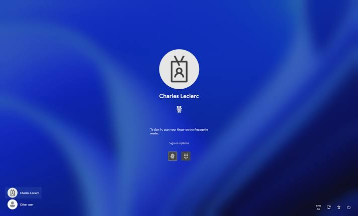
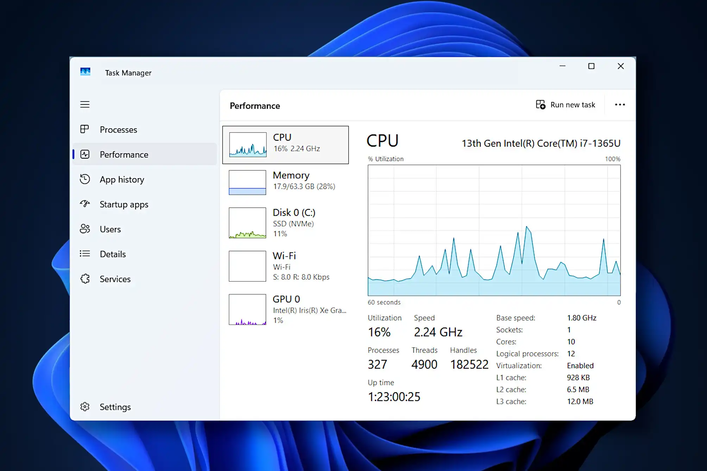
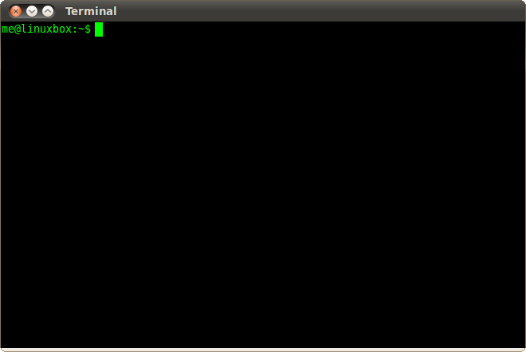
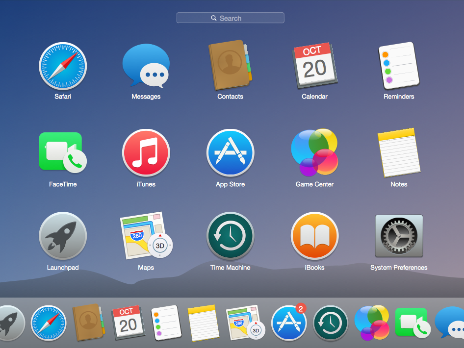
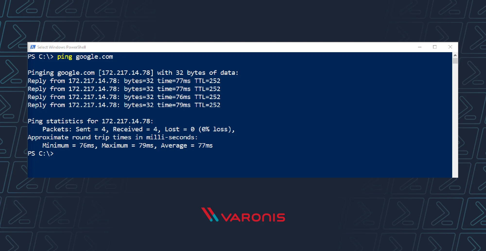

การรักษาความปลอดภัยของระบบ
- Login: ยืนยันตัวตนเพื่อตรวจสอบสิทธิ์การใช้งาน
- สิทธิ์ผู้ใช้: เข้าใช้โปรแกรมใด ดูข้อมูลใด ได้หรือไม่
- Password: วิธีดั้งเดิม แต่ต้องจำ
-
Biometrics: ลายนิ้วมือ
สแกนหน้า แม่นยำและไม่ต้องจำ
ข้อดี: ปลอดภัยสูง
ข้อเสีย: ต้องเก็บข้อมูลชีวภาพให้ปลอดภัย - One-Time Password (OTP): รหัสใช้ได้ครั้งเดียว จำกัดเวลา (ผ่าน SMS)
- Passkey: ใหม่ ไม่ต้องจำ password ป้องกัน Phishing/Pharming
ตัวอย่างรูปภาพระบบรักษาความปลอดภัย

การตรวจสอบสถานะการทำงานของระบบ
- Windows: Task Manager ตรวจสอบประสิทธิภาพ (Performance)
- Android: แอปตรวจสอบสถานะการทำงาน (ฝังใน OS)
- ตรวจสอบ: CPU usage, Memory usage, Disk usage
ตัวอย่างการตรวจสอบสถานะการทำงานของระบบ

Task Manager
ส่วนติดต่อกับผู้ใช้ (User Interface)
Command Line
ป้อนคำสั่งข้อความ (Text) ทีละบรรทัด เหมาะสำหรับผู้ที่มีความชำนาญ
ตัวอย่าง: DOS, Unix/Linux
command prompt
Graphical (GUI)
ใช้รูปภาพและสัญลักษณ์แทนข้อความ ผู้ใช้ไม่ต้องจดจำรูปแบบคำสั่ง
เลือกจากเมนูบนจอผ่านเมาส์หรือแตะจอ
ตัวอย่าง: Windows, macOS,
สมาร์ตโฟน นิยมใช้ในระบบปฏิบัติการสมัยใหม่
Kernel และ Shell
- Kernel: ส่วนหลักทำหน้าที่สำคัญ (จัดคิว จัดสรรหน่วยความจำ ฯลฯ) ฝังตัวใน RAM ตลอดเวลา
-
Shell: เปลือกห่อหุ้ม Kernel
รับคำสั่งจากผู้ใช้ส่งให้ Kernel
ตัวอย่าง: DOS มี command.com Windows มี Shell แบบ GUI
ตัวอย่างรูปภาพส่วนติดต่อกับผู้ใช้ Command Line, GUI และ Kernel และ Shell

Command Line

GUI

Kernel และ Shell